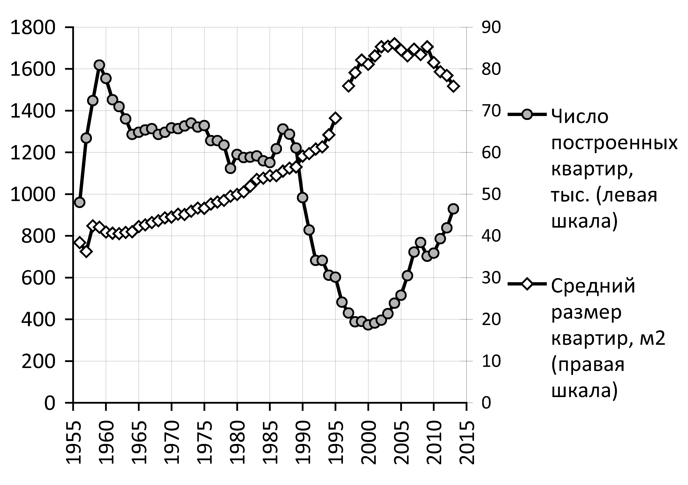

http://burckina-new.livejournal.com/37253.html
Дмитрий Николаев
Как подменили советский дефицит рыночным
Вставки с диаграммами и графиками: burckina_new
Современная экономическая система даёт непоправимые сбои именно там, где она «грозилась» быть наиболее сильной: а именно, на уровне потребления. «Общество потребления» разрушает собственное потребление, не имея при этом каких-то других, более высоких задач, кроме организации потребительства! Отцвели пышные пустоцветы демагогии «переходного периода» от дефицитных прилавков к миру, в котором всех якобы завалят потребительскими благами. Всё более и более обнажается несоответствие рыночной системы (выстроенной на воинственном противостоянии людей друг другу) – всеобщему потребительскому изобилию (выстроенному на взаимовыручке и взаимопомощи).
Сегодня перед нами – осуществляемая либералами всех мастей (включая и «правых-белых патриотов-консерваторов») попытка подменить колоссальный дефицит основополагающих, базовых жизненных благ для большинства населения – какой-то невнятной и сомнительной потребительской «экзотикой»: на собственное жильё денег нет, зато в Турцию съездили, колбаса без мяса – зато тридцать сортов этой эрзац-колбасы вместо одного прежнего.
Нечем заплатить врачам за операцию, неподъёмна стоимость платного образования – зато купили подержанную иномарку. Нетрудно заметить неполноценность такой замены, больше похожей на подмену, подлог.
Конечно, неплохо побывать в Таиланде! Однако иметь собственную квартиру важнее. Личный автомобиль, даже подержанный, хорошей иностранной марки – кто бы спорил, благо. Но всё-таки, представляется, возможность хорошего образования или жизненно-необходимой операции для детей – важнее «быстрой езды» с ветерком…
У нас даже уже примета возникла: чем больше начинает кривляться «россиянская» пропаганда насчет очередей в СССР – тем, значит, хуже дела в «россиянском» потреблении.
На самом деле, конечно же, «страдания потребителя» в СССР – это миф-неологизм, такой же, как и древность «украинской нации». Это мифотворчество последних (во всех смыслах) времён.
Что тот, что другой миф возникли совсем недавно, для нужд агитпропа, как говорят источниковеды – «аутентичных источников не имеют».
Современники советских потребительских систем рисовали совершенно иную картину восприятия имеющихся потребительских возможностей, учитывая как массив, так и динамику потребления (от голодных лет к сытым)[1].
Что касается НЕХВАТОК – то они, естественно были. Но они связаны с ЖЕЛЕЗНЫМ ЗАКОНОМ экономической науки, согласно которому ВСЯКОЕ ПОТРЕБЛЕНИЕ, ЛЮБОЕ И ВЕЗДЕ, НЕРАЗРЫВНО СВЯЗАНО С НЕДОСТАТОЧНОСТЬЮ. Нет такого товара, которого всегда и всем хватало бы. Если бы это случилось – товар перестал бы быть товаром, вышел бы за рамки экономики, как, например, воздух для дыхания. Товары только потому товары, что их не всем хватает. Если бы их хватало всем – то их бы не продавали и не покупали, т.е. сам механизм торговли исчез бы (на что, кажется, намекала КПСС с туманным образом её «коммунизма»).
Если мы говорим об экономике – то мы говорим о нехватках, дефиците. Без них исчезла бы экономическая тематика в нашем разговоре, глупо же говорить о товарно-денежных отношениях при дыхании атмосферой!
Более того: человек, имеющий хотя бы начальное представление об экономической науке, понимает: по мере улучшение потребления ассортимент нехваток (дефицитов) растёт!
Почему? Отвечаю: голодному нужен только хлеб. В его потребительской фантазии ничего, кроме хлеба, нет. Голодающий имеет нехватку одного (или трёх-четырёх) продукта. С улучшением потребления расширяется круг нехваток, возникают новые потребности.
Чем шире круг потребления – тем длиннее у него окружность, неизбежно соприкасающаяся со сферой недостающего.
Одно дело, если тебе недостаёт только комнаты. Совсем другое – если недостаёт уже отдельной многокомнатной квартиры. Одно дело – нехватка лопаты. И совсем другое – нехватка экскаватора!
Зачем, к примеру, неграмотному библиотека? А тому, кто получил хорошее образование – подавай множество книг. И отсутствие любой книги этого списка – уже нехватка, дефицит, для неграмотного совершенно неактуальные и даже невообразимые…
Парадоксальным (на первый взгляд) образом дефицит снижается при ухудшении снабжения. Деградирует – как в ельцинской РФ – структура потребления: человек, потерявший надежду получить главное в жизни, собственное жильё – получает сомнительную компенсацию в виде некоторого привеска колбасы* и т.п.
* - нет никакого привеска колбасы. Это убедительно показывает таблица потребления относительно 1990 года:

Давайте ответим на загадочный вопрос: почему в СССР была острейшая нехватка** жилплощади, а в РФ – стоят незаселёнными новые благоустроенные дома? Куда исчез советский дефицит жилья? Почему он сменился предлагаемым кажущимся «изобилием» рыночного предложения квартир?
** - В РСФСР строилось больше квартир в год, чем сейчас:

и строилось больше кв. метров на 1000 человек, чем после развала СССР:

Ведь очевидно же, что НЕХВАТКА ЖИЛЬЯ отнюдь не преодолена в РФ, и даже наоборот. Но у большинства населения ДЕГРАДИРОВАЛА СТРУКТУРА ПОТРЕБЛЕНИЯ, приобретение жилья перестало в ней фигурировать в связи с полной его недоступностью. Это касается и всех других видов потребительских товаров.
Если поднять на любой товар цену в 10 раз – автоматически возникнет изобилие предложения данного товара. Оно возникнет не потому, что товаров стало больше, а потому, что покупателей меньше, и их покупки – менее весомы. Поэтому можно даже говорить, что товарно-рыночное преодоление дефицита товаров есть путь к росту бытовых нехваток. Неудобство (давка в очередях) при покупке снимается – но за счет снижения вероятности покупки!
Рассуждения о том, что можно построить экономику без нехваток – антинаучны. Экономика без нехваток – что-то вроде коммунизма или Эдемского сада, в ней исчезнут все экономические категории. Пока экономика существует – существуют и нехватки в ней. Вопрос в другом – чего именно не хватает и насколько его не хватает? Щи ли жидковаты или жемчуг мелковат?!
Избавляя от нехватки самого необходимого для жизни, экономика создаёт множественные дефициты разных предметов роскоши. Их тем больше – чем короче очереди за хлебом и бесплатным супом для бедных.
+++
Понимая это – мы переходим к вопросу другого уровня, к философскому вопросу о сути и назначении экономики. Для современных «сислибов» такого вопроса не стоит. В их представлении экономика существует исключительно для беспредельного обогащения кучки уродов. Причем чем уродливее урод – тем больше ему причитается в расхитительном, жизнеразрушительном процессе.
При таком фундаментальном понимании экономики – мы на полных порах идём к техногенному и прочим апокалипсисам, и непременно там будем, если не изменим отношение к базовому для существования человечества экономическому знанию.
Странна сама попытка «сислибов»-рыночников совместить цивилизованное общество - и неограниченность богатства/бедности.
Когда нет пределов ни падению, ни обогащению - это по определению – «беспредел». Что же ещё, если пределов-то нет?! Неограниченность хищничества и незащищенность от пожирания существуют в животном мире, а для цивилизованного общества немыслимы.
В дискуссии «перестройки», которую либералы-рыночники вчистую ныне проиграли (и даже перестали в диалоги вступать с такими авторами, как я) нам навязывали оценку обществ только по уровню потребления.
Да мы и сами прибегали к ней, поскольку она была нам тактически выгодна. Уровень потребления в СССР в среднем был выше, чем в пост-советской РФ[2], при значительно большей безопасности и устойчивости потребления. Все рыночные реформы означали, по сути, обогащение кучки проходимцев при обнищании широких масс населения.
Советская экономика отнюдь не была эталоном эффективности, но экономика наследников СССР оказалась на порядок менее эффективной. Мы это подчеркивали, нам это было выгодно в споре – хотя вопрос, конечно НЕ ТОЛЬКО В УРОВНЕ И СТРУКТУРЕ ПОТРЕБЛЕНИЯ.
Это грубое, зримое преимущество уводило в сторону от вопроса: а что, если бы РФ сумела каким-то образом превзойти потребительские показатели РСФСР? Если бы она больше предоставляла жилья, колбасы, санаториев и качественного образования, носков и штанов, чем в 1989 году? Она что, получила бы цивилизационное преимущество, и стала бы считаться прогрессивной?
Если бы это было так, то книга памяти человеческой, в которую занесены лучшие представители цивилизации – была бы книгой рекордов Гиннеса по части обжорства. А это не так. Почему?
Потому что всякий поглотительный процесс является для цивилизации вторичным, вспомогательным. Главным же для цивилизации является не потребление, а генерация сил и ценностей.
В рыночном обществе творец творит, чтобы иметь возможность потреблять. В нормальном человеческом обществе творец потребляет – чтобы иметь возможность творить.
Обратите внимание, как перевернула современность с ног на голову цивилизационный процесс: средство поддержания штанов превратило в самоцель и высший идеал, а главное, составляющее предмет собственно человека (сверх его биологической, животной природы) – или выкинула, или сделала декоративным орнаментом обжорства.
Потребительский уровень никак не тождественен цивилизационному.
Никто не отрицает ценности свиноводства: однако не до такой же степени, чтобы обожествляемые свинья, для прироста веса – сожрали своих свинарей!
31.05.2016